생산자동화산업기사 (2008-09-07 기출문제)
1과목: 기계가공법 및 안전관리
1. 산화 알루미늄 분말을 주성분으로 하여 마그네슘, 규소 등의 산화물과 소량의 다른 원소를 첨가하여 소결한 절삭 공구 재료는?
- 고속도강
- 세라믹
- CBN 공구
- 초경합금
(정답률: 알수없음)

2. 드릴의 구멍뚫기 작업을 할 때 주의해야 할 사항이다. 틀린 것은?
- 드릴은 흔들리지 않게 정확하게 고정해야 한다.
- 장갑을 찌고 작업을 하지 않는다.
- 구멍뚫기가 끝날 무렵은 이송을 천천히 한다.
- 드릴이나 드릴 소켓 등을 뽑을 때에는 해머 등으로 두들겨 뽑는다.
(정답률: 알수없음)
3. 주철을 저속으로 절삭할 때 주로 나타나는 칩(chip)의 형태는?
- 전단형
- 열단형
- 유동형
- 균열형
(정답률: 알수없음)
4. 브로치 절삭날 피치를 구하는 식은? (단, P=피치, L=절삭날의 길이, C는 가공물 재질에 따른 상수이다.)
- P = C√L
- P = C×L
- P = C×L2
- P = C2×L
(정답률: 알수없음)
5. 숏 피닝(shot peening) 가공 조건에 중요한 영향을 미치지 않은 것은?
- 분사속도
- 분사각도
- 분사액
- 분사면적
(정답률: 알수없음)
6. 밀링 머신 중 분할대나 헬리컬 절삭 장치를 사용하여 헬리컬 기어, 트위스트 드릴의 비틀림 홈 등의 가공에 가장 적합한 것은?
- 수직 밀링 머신
- 수평 밀링 머신
- 만능 밀링 머신
- 플레이너형 밀링 머신
(정답률: 알수없음)
7. 밀링 가공시 지켜야 할 안전 사항으로 틀린 것은?
- 절삭 가공 중 칩을 제거할 때에는 장갑 낀 손으로 제거한다.
- 가공물은 바른 자세에서 단단하게 고정한다.
- 가동 전에 각종 레버, 자동이송, 급송이송 등을 반드시 점검한다.
- 칩 커버를 설치한다.
(정답률: 알수없음)
8. 각도 측정기의 종류가 아닌 것은?
- 플러그 게이지
- 사인바
- 컴비네이션 세트
- 수준기
(정답률: 알수없음)
9. 연삭숫돌의 결합도가 높은 것을 사용해야 하는 연삭작업은?
- 경도가 큰 가공물을 연삭할 경우
- 숫돌차의 원주 속도가 빠를 경우
- 접촉 면적이 작은 연삭작업일 경우
- 연삭깊이가 클 경우
(정답률: 알수없음)
10. 기어 절삭법에 해당되지 않는 것은?
- 선반에 의한 절삭법
- 형판에 의한 절삭법
- 창성에 의한 절삭법
- 총형 공구에 의한 절삭법
(정답률: 알수없음)
11. CNC 선반가공용 프로그램에서 G96 S100 M03 ; 일 때 S100의 의미는?
- 회전당 이송량
- 원주속도 100 m/min으로 일정제어
- 분당 이송량
- 회전수 100 rpm 으로 일정제어
(정답률: 알수없음)
12. 환봉을 황삭가공하는데 이송을 0.1mm/rev로 하려고 한다. 바이트의 노즈반경이 1.5mm라고 한다면 이론상의 최대 표면 거칠기는 얼마 정도가 되겠는가?
- 8.3×10-4 mm
- 8.3×10-3 mm
- 8.3×10-5 mm
- 8.3×10-2 mm
(정답률: 알수없음)
13. 선삭에서 테이퍼의 큰 지름을 D(mm), 작은 지름을 d(mm), 테이퍼 부분의 길이를 l(mm), 일감의 전체길이를 L(mm)이라 하면, 심압대의 편위량 e(mm)를 구하는 식으로 옳은 것은?
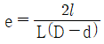
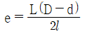
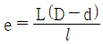
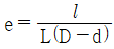
(정답률: 알수없음)
14. 선반가공에서 작업자의 안전을 위해 칩을 인위적으로 짧게 끊어지도록 만드는 것은?
- 여유각
- 경사각
- 칩 브레이커
- 인선 반지름
(정답률: 알수없음)
15. 수작업으로 선재, 봉재 등에 수나사를 깍을 때 사용하는 공구는?
- 탭
- 다이스
- 스크레이퍼
- 커터
(정답률: 알수없음)
16. 일반적으로 공구 연삭기로 연삭하는 절삭공구로 적합하지 않은 것은?
- 바이트
- 줄
- 드릴
- 밀링커터
(정답률: 알수없음)
17. 높은 정밀도를 요구하는 가공물, 각종 지그, 정밀기계의 구멍가공 등에 사용하는 보링머신으로, 온도 변화에 따른 영향을 받지 않도록 항온 항습실에 설치해야 하는 것은?
- 코어보링머신
- 수직보링머신
- 수평보링머신
- 지그보링머신
(정답률: 알수없음)
18. 밀링머신의 부속장치가 아닌 것은?
- 슬로팅 장치
- 회전 테이블
- 래크 절삭장치
- 맨드릴
(정답률: 알수없음)
19. 밀링 가공에서 테이블의 이송 속도를 구하는 식은? (단, F는 테이블 이송속도(m/min), fz는 커터 1개의 날당 이송(mm/tooth), Z는 커너의 날수, n은 커터의 회전수(rpm), fr은 커터 1회전당 이송(mm/rev)이다.)
- F = fz × Z × n
- F = fz × Z
- F = fz × fr
- F = fz × fr × n
(정답률: 알수없음)
20. 시준기와 망원경을 조합한 것으로 미소 각도를 측정할 수 있는 광학적 각도 측정기는?
- 베벨 각도기
- 오토 콜리메이터
- 광학식 각도기
- 광학식 클리노미터
(정답률: 알수없음)
2과목: 기계제도 및 기초공학
21. 드릴의 지름이 8mm이고, 회전수가 900rpm 인 기계의 절삭속도(m/s)는 약 얼마인가?
- 0.37
- 0.42
- 0.47
- 0.51
(정답률: 알수없음)
22. 입구의지름이 30mm이고, 속도가 2m/s인 물이 흘러 들어가 지름 10mm인 단면으로 흘러 나올 때 물의 속도는 몇 m/s 인가?
- 5
- 10
- 18
- 30
(정답률: 알수없음)
23. 힌지로 고정된 길이가 L인 봉의 끝에 직각방향으로 힘 F를 작용시킬 때 힌지에 발생하는 모멘트 M를 구하는 식은?
- M = F ⦁ L2
- M = F ⦁ L
- M = F ÷ L2
- M = L ÷ F
(정답률: 알수없음)
24. 다음 그림과 같은 지렛대에 10kgf의 물체가 올려져 있다. 이 지렛대가 평형 상태를 유지하기 위해서는 P에 얼마의 힘(kgf)이 필요한가?
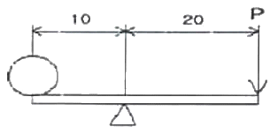
- 5
- 10
- 15
- 20
(정답률: 알수없음)
25. 직경이 6cm인 원형 단면에 2400kgf의 인장 하중이 작용할 때 발생하는 인장 응력은 약 몇 kgf/cm2 인가?
- 85
- 95
- 1⑤
- 125
(정답률: 알수없음)
26. 전선의 직경이 동일한 조건에서 길이가 길면 저항값은 어떻게 변하는가?
- 커진다.
- 작아진다.
- 커지다가 작아진다.
- 변함이 없다.
(정답률: 알수없음)
27. 다음 중 힘의 단위로 옳은 것은?
- kg·m/s2
- N/m2
- kg·m
- m/s2
(정답률: 알수없음)
28. 다음 중 1라디안(rad)을 60분법으로 환산하여 바르게 나타낸 것은?
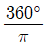
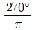
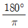
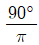
(정답률: 알수없음)
29. 한 변의 길이가 30mm이고, 길이가 500mm인 정사각형 알루미늄 봉의 무게는 몇 N 인가? (단, 알루미늄의 밀도는 2.7g/cm3, 중력가속도는 10m/s2 이다.)
- 0.45
- 12.15
- 1215
- 4500
(정답률: 알수없음)
30. 그림과 같은 회로에서 3Ω의 저항에 6A의 전류가 흐를 때 단자 a, b사이의 전위차는 몇 V 인가? (단, 그림에서의 저항단위는 모두 Ω 이다.)
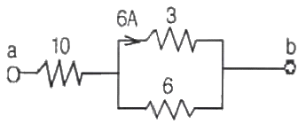
- 54
- 108
- 126
- 174
(정답률: 알수없음)
31. “윈도 98”에서는 CD-ROM Title를 드라이브에 넣으면 자동으로 실행되는 기능을 제공하는데, 이 기능을 멈추게 하는 방법은?
- Shift 키를 누른 채로 삽입
- Alt 키를 누른 채로 삽입
- F4 키를 누른 채로 삽입
- Ctrl 키를 누른 채로 삽입
(정답률: 알수없음)
32. 실시간 처리 시스템과 거리가 먼 것은?
- 산업 제어 시스템
- 온라인 예금 시스템
- 좌석 예약 시스템
- 급여 처리 시스템
(정답률: 알수없음)
33. Which is not operating system?
- UNIX
- DOS
- WINDOWS 98
- PASCAL
(정답률: 알수없음)
34. 페이지 교체 알고리즘 중 가장 오랫동안 사용되지 않고 있던 페이지를 교체하기 위하여 사용되는 것은?
- FIFO
- NUR
- RR
- LRU
(정답률: 알수없음)
35. 다음 설명은 무엇에 관한 내용인가?
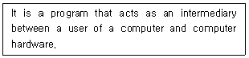
- application program
- operating sysytem
- job scheduling
- file system
(정답률: 알수없음)
36. 운영체제의 제어프로그램 중 주기억장치와 보조기억장치사이의 자료 전송, 파일의 조작 및 처리, 입/출력 자료와 프로그램 간의 논리적 연결 등 시스템에서 취급하는 파일과 데이터를 표준적인 방법으로 처리할 수 있도록 관리하는 것은?
- supervisor program
- data management program
- job control program
- problem program
(정답률: 알수없음)
37. “윈도 98”에서 다음 설명에 해당하는 것은?
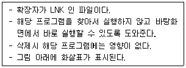
- 아이콘
- 단축아이콘
- 폴더
- 작업표시줄
(정답률: 알수없음)
38. 다음에서 설명한 메모리의 종류로서 알맞은 것은?
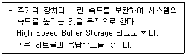
- Associative Memory
- Cache Memory
- Read Only Memory
- Virtual Memory
(정답률: 알수없음)
39. CPU의 시간을 공유하여 사용함으로써 각 사용자가 마치 자신만이 컴퓨터를 사용하고 있는 것처럼 느끼도록 제공하는 시스템은?
- 시분할 시스템
- 오프라인 시스템
- 분산처리 시스템
- 일괄처리 시스템
(정답률: 알수없음)
40. “윈도 98”의 제어판에서 시동 디스크를 만들려면 어떤 항목을 선택하여야 하는가?
- 시스템
- 사용자
- 내게 필요한 옵션
- 프로그램 추가/제거
(정답률: 알수없음)
3과목: 자동제어
41. 다음 래더도와 일치하는 논리도는?
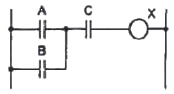
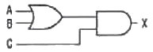
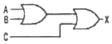
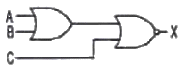
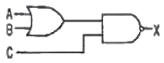
(정답률: 알수없음)
42. 다음 회로의 논리기호는?
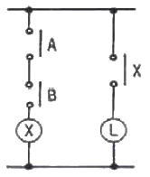
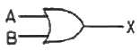
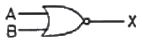
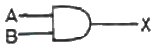
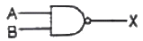
(정답률: 알수없음)
43. 전자계산기 자신의 a접점을 이용하여 회로를 구성하여 스스로 동작을 유지하는 회로는?
- 우선회로
- 순차회로
- 자기유지회로
- 유극회로
(정답률: 알수없음)
44. 다음 중 전달함수를 바르게 표현한 것은?
- 비례요소의 전달함수는 1/Ts 이다.
- 미분요소의 전달함수는 K 이다.
- 적분요소의 전달함수는 Ts 이다.
- 1차 지연요소의 전달함수는 K/(Ts+1) 이다.
(정답률: 알수없음)
45. NC 기계의 동력전달 방법으로 서보모터와 볼나사 축을 직접 연결하여 연결부위에 백래쉬 발생을 방지시키는 기계요소로 가장 적합한 것은?
- 기어
- 타이밍벨트
- 인코더
- 커플링
(정답률: 알수없음)
46. 다음 중 제벡 효과를 이용하여 온도를 측정할 수 있도록 만든 장치는?
- 차동변압기
- 측온저항
- 열전대
- 다이어프램
(정답률: 알수없음)
47. 프로그램 입력장치를 이용하여 시퀀스 프로그램의 내용을 PLC의 메모리에 입력하는 것은?
- 코딩
- 로딩
- 시뮬레이션
- AND
(정답률: 알수없음)
48. 래더 다이어그램에 대한 설명으로 맞는 것은?
- 릴레이 제어회로의 표현에 사용된다.
- 위치제어 문제의 정확한 해결에 사용된다.
- 프로그램 메모리에 저장되는 프로그램이다.
- 제어 시스템에서 부품의 연결을 나타내는 계획도이다.
(정답률: 알수없음)
49. 일반적인 경우 PLC의 출력 모듈과 사용 전원이 바르게 연결된 것은?
- 트랜지스터 – 교류, 직류
- 트라이액 – 교류, 직류
- 릴레이 – 교류, 직류
- TTL 레벨 – 교류, 직류
(정답률: 알수없음)
50. 다음 중 CPU 내의 데이터 버스에 관한 설명으로 가장 적합한 것은?
- 데이터가 오고 가는 길이다.
- 데이터를 임시로 기억하는 곳이다.
- 어큐뮬레이터(accumulator)라고 부른다.
- 레지스터에게 일을 지시하는 레지스터의 대표라 할 수 있다.
(정답률: 알수없음)
51. 다음 중 PLC에 대한 설명으로 잘못된 것은?
- 저장된 프로그램에 의해 입력과 출력을 모니터링을 하면서 기계와 공정을 제어한다.
- 하드웨어를 바꾸지 않고 소프트웨어를 이용하여 제어방법을 변경할 수 있다.
- 입력과 출력의 인터페이스는 반드시 PLC 외부에서 이루어진다.
- 프로그램은 주로 논리연산, 산술연산, 스위칭연산 등으로 구성된다.
(정답률: 알수없음)
52. 어떤 NC(Numerical control) 기계의 기계제어장치(MCU)는 스테핑 모터를 제어하는데 있어서 12초 동안 20000 pulse를 발생한다. 만약 이 기계의 BLU(최소 이송 단위)가 0.01 mm/pulse 라면 이 때의 분당 이동 속도는 몇 m/min 인가?
- 0.2
- 1
- 2
- 10
(정답률: 알수없음)
53.
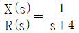
의 전달함수를 미분방정식으로 표현한 것으로 옳은 것은?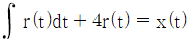
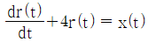
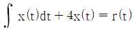
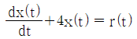
(정답률: 알수없음)
54. 다음 중 출력요소에 속하는 것은?
- LED
- 스위치
- 센서
- 키보드
(정답률: 알수없음)
55. 마이크로프로세서의 어드레스 단자가 16개이고, 데이터 단자가 8개이면 메모리의 최대 크기로 맞는 것은?
- 64 kbyte
- 128 kbyte
- 256 kbyte
- 512 kbyte
(정답률: 알수없음)
56. 물체의 위치, 방위, 자세 등의 기계적 변위를 제어량으로 해서 목표값의 임의의 변화에 추종하도록 구성된 제어계는?
- 서보 기구
- 프로세스 제어
- 자동 조정
- 정치 제어
(정답률: 알수없음)
57. 다음 그림과 같은 블록선도의 전달함수로 올바른 것은?
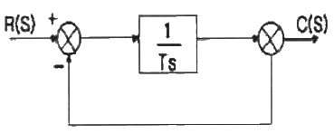
- 1/Ts
- 1/Ts+1
- Ts+1
- Ts
(정답률: 알수없음)
58. 생산공정이나 기계장치 등에 자동제어계를 사용할 때의 특징으로 잘못된 것은?
- 생산속도 증가
- 제품 품질의 균일화
- 인건비 감소
- 생산 설비의 수명 감소
(정답률: 알수없음)
59. 목표값 400℃의 전기로에서 열전 온도계의 지시에 따라 전압 조정기로 전압을 조절하여 온도를 일정하게 유지시키고 있다. 이 때 온도는 어느 것에 해당되는가?
- 검출부
- 조작부
- 제어량
- 조작량
(정답률: 알수없음)
60. 특성방정식 s2 + 2ζωns + ωn2 = 0에서 ζ를 감쇠비라고 할 때 ζ ＜ 1 인 경우는? (단, ωn 은 자유주파수 또는 고유주파수 이다.)
- 임계진동
- 강제진동
- 감쇠진동
- 완전진동
(정답률: 알수없음)
4과목: 메카트로닉스
61. 공압 타이머에서 제어 신호가 존재함에도 출력신호가 발생하지 않을 때 점검해야 할 사항은 무엇인가?
- 윤활유에 수분이 섞였는지 확인한다.
- 탱크가 더러운지 확인한다.
- 유량조절용 밸브의 조절 나사를 완전히 열고 공기의 새는 소리를 확인한다.
- 포핏 밸브의 고장을 확인한다.
(정답률: 알수없음)
62. 일반적으로 큰 운동에너지를 얻기 위해 설계된 것으로 리벨팅, 펀칭, 프레싱 작업 등에 사용하는 공압 실린더는?
- 양로드 실린더
- 쿠션 내장형 실린더
- 충격 실린더
- 텔르소코프형 실린더
(정답률: 알수없음)
63. 콘베이어에서 1분에 3000개의 검출체가 이동할 때 통과한 검출체를 계수하기 위한 근접 센서의 최소 감지 주파수(Hz)는?
- 20
- 30
- 40
- 50
(정답률: 알수없음)
64. 공압실린더의 고장을 야기할 수 있는 상태가 아닌 것은?
- 행정거리가 긴 경우
- 피스톤 로드에 검은 윤활유 피막이 발생한 경우
- 실린더의 반지름 방향 하중이 작용하는 경우
- 윤활된 공기를 사용하는 경우
(정답률: 알수없음)
65. 폐회로 자동제어 시스템만이 갖는 특징은?
- 외란 변수의 변화가 작다.
- 외란 변수에 의한 영향을 제어할 수 없다.
- 적은 에너지로 큰 에너지를 조절한다.
- 출력신호의 일부가 시스템에 보내어져 오차를 수정하는 피드백 통로가 있다.
(정답률: 알수없음)
66. 계자 권선과 전기자 권선의 접속 방식의 분류에 따른 직류 전동기는?
- 권선형 전동기
- 농형 전동기
- 리액션 전동기
- 복권 전동기
(정답률: 알수없음)
67. 직류 전동기에서 전기자 회로 혹은 계자 회로가 단선되었을 때 발생하는 현상으로 맞는 것은?
- 회전시 소음 발생
- 전동기 과열
- 브러시에서 스파크 발생
- 회전방향 불량
(정답률: 알수없음)
68. 세 개의 입력 요소 중 첫 번째와 세 번째가 함께 작동하든지, 두 번째 요소가 작동된 상태에서 세 번째 요소가 작동되지 않았을 때 출력이 존재하는 제어기를 논리식으로 맞게 표현한 것은? (단, 출력은 Z, 첫 번째 입력은 S1, 두 번째 입력은 S2, 세 번째 입력은 S3 이다.)
- Z = S1 + S2 + S3
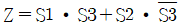
- Z = S1 + S2 ⦁ S3
- Z = S1 + S2 ⦁ S2 + S3
(정답률: 알수없음)
69. 낮은 출력이 요구되는 곳에 사용되며, 특히 대단히 높은 속도를 필요로 하는 치과용 공기 드릴 등에 사용되는 공압모터는?
- 피스톤 모터
- 베인 모터
- 기어 모터
- 터빈 모터
(정답률: 알수없음)
70. 유압실린더에서 전후진 완료 위치에서 가해지는 충격을 방지하기 위한 실린더는?
- 양로드 실린더
- 쿠션 내장형 실린더
- 텔레스코프 실린더
- 탠덤 실린더
(정답률: 알수없음)
71. 수치제어 시스템에서 유지 보수하기 위한 올바른 윤활방법이 아닌 것은?
- 파워 척의 윤활은 매일 점검한다.
- 기어박스 윤활 시스템은 설치 3개월 후 교체한다.
- 메인 스핀들 베어링은 저점도 그리스로 도포한다.
- 가이드 윤활 시스템은 매 60시간 주기로 보충한다.
(정답률: 알수없음)
72. FMS의 자동화 레벨을 결정하는 요소가 아닌 것은?
- 필요공구
- 처리시간
- 생산량
- 로트사이즈
(정답률: 알수없음)
73. 물체가 접근하면 진폭이 감소하는 고주파 LC발진기에 의해 센서표면에 전자계를 형성하고 감지거리 이내의 물체에 의한 변화에 따라 출력을 내보내는 센서는?
- 유도형 센서
- 용량형 센서
- 광 센서
- 리드스위치
(정답률: 알수없음)
74. 신호를 시간과 정보량에 따라 구분한 것이 아닌 것은?
- 아날로그 신호
- 이산시간 신호
- 디지털 신호
- 속도 신호
(정답률: 알수없음)
75. 이진신호 8bit로 표현할 수 있는 신호의 최대 개수는?
- 256
- 128
- 64
- 32
(정답률: 알수없음)
76. 전 단계의 작업완료 여부를 리밋스위치나 센서를 이용하여 확인한 후 다음 단계의 작업을 수행하는 것으로써 공장자동화에 가장 많이 이용되는 제어 시스템은?
- 파일럿 제어(Pilot Control)
- 시컨스 제어(Sequence Control)
- 메모리 제어(Memory Control)
- 조합제어(Coordinated Motion Control)
(정답률: 알수없음)
77. 두 개의 입력이 모두 1 일 때만 출력이 1이 되는 것은?
- AND 논리
- OR 논리
- NOT 논리
- EX-OR 논리
(정답률: 알수없음)
78. 자동화 시스템의 구성 요소 중 입력된 정보를 미리 정해진 일련의 명령에 의해 처리하여 출력으로 내보내는 인간의 두뇌 역할을 하는 것은?
- 센서
- 프로세서
- 액추에이터
- 프로그램
(정답률: 알수없음)
79. 프로그램 플로차트의 기호 중 “◇”는 무엇을 의미하는가?
- 제약
- 일반적인 작업
- 분기
- 프린터 출력
(정답률: 알수없음)
80. 반도체 메모리의 특징이 아닌 것은?
- 대용량의 메모리
- 적은 설치 면적
- 빠른 처리 속도
- 고자계 자성체
(정답률: 알수없음)